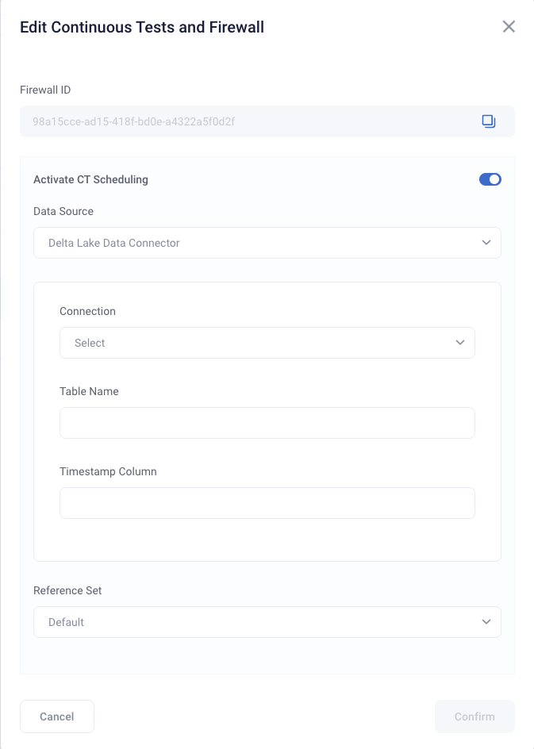
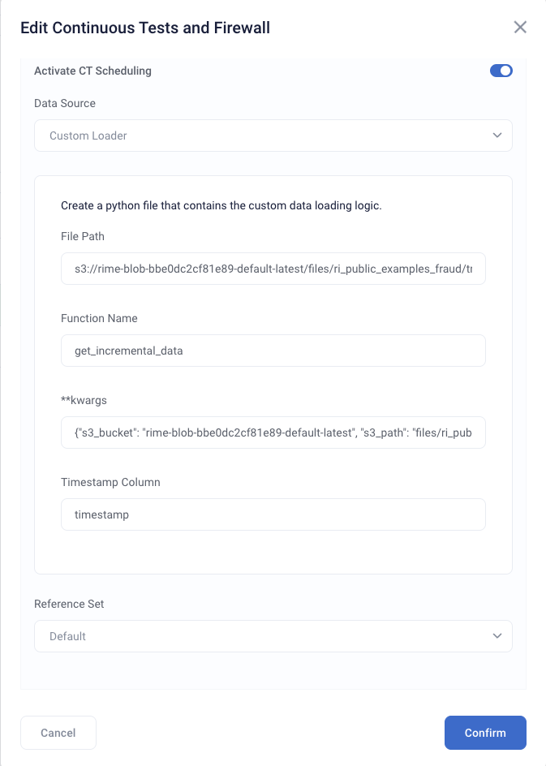

Scheduling Continuous Testing runs
You can create and update the schedule for a Continuous Test from the SDK or the UI. For more configuration information, see the Scheduled CT Configuration Page
Activating a schedule
Creating a schedule with a new Continuous Test from SDK
To begin, initialize the Client and point it to the location of your RIME backend.
from rime_sdk import Client
rime_client = Client("rime.<YOUR_ORG_NAME>.rime.dev", "<YOUR_API_TOKEN>")
You can set a schedule at the same time you create a Continuous Test. To create a schedule, specify a data source as well as any credentials required for access to the data source.
project = rime_client.create_project("<NAME>", "<DESCRIPTION>")
# Create a firewall with an active schedule. This will routinely read from
# the data collector and run tests once every bin_size time period (eg. once a day, week, etc...).
# No arguments are needed by the RIME Engine to access the data collector, since the service is internal
project.create_firewall(model_id:"model", ref_data_id:"foo", bin_size:timedelta(hours=3))
Optionally, provide parameters to process this data, such as timestamp column names.
data_params_dict = {
"nrows": 100
}
# Create a firewall with an active schedule.
# The data loaded has a timestamp column defined above.
firewall = project.create_firewall(name: "<NAME>", bin_size="<BIN_SIZE>", test_run_id=test_run_id, run_ct_schedule=True, location_type="data_collector", data_params=data_params_dict)
Since each data location requires specific parameters for the RIME Engine to access and process the data, see the Scheduled CT Configuration Page for details about configurations for different use cases.
Creating a schedule on an existing Continuous Test from the SDK
You can enable a schedule for an existing Continuous Test at any time.
# Get a Continuous Test from a project
firewall = client.get_firewall_for_project("<YOUR_PROJECT_ID>")
# Activate a schedule
firewall.activate_ct_schedule(location_type="data_collector", reference_set_window=reference_set_bin, data_params=data_params_dict)
Deactivating a schedule from the SDK
To deactivate a schedule for a Contnuous Test, run the following command.
firewall.deactivate_ct_schedule()
Activating and deactivating a schedule from the UI
Choose an integration to use as a data source. The current supported options are Databricks Delta Lake, the Data Collector, or a custom loader.
Specify a table and timestamp column.
For the custom loader, specify the path of the custom loading file, the name of the function that loads the data, any relevant keyword arguments in JSON format, and the timestamp column.
Additional specifications
Modifying the reference dataset
In addition to specifying access and process parameters, you can also modify the reference data that tests are routinely run against.
A Continuous Test run can use a registered dataset, a rolling time window, or a specific time period.
From the UI, choose a reference dataset in the “Reference Set” dropdown and fill in the relevant fields. For the non-default options, the reference dataset always comes from the same data source that is specified for CT scheduling.
You can also specify the reference dataset from the SDK.
from datetime import datetime, timedelta
# Specify a duration for the rolling window.
# The reference set will change each period based on the window size
rolling_window_period = timedelta(days=1)
firewall.activate_ct_schedule(location_type="data_collector", rolling_window_duration=rolling_window_period)
# Specify a new time period as the reference set
reference_start_time = datetime(2022, 1, 3)
reference_end_time = datetime(2021, 1, 3)
reference_set_bin = (reference_start_time, reference_end_time)
firewall.activate_ct_schedule(location_type="data_collector", reference_set_window=reference_set_bin)
Modifying existing schedules
To change the data location associated with your runs or the reference set, use the update_location_info
function.
from datetime import datetime
# Specify a new time period as the reference set
reference_start_time = datetime(2022, 1, 3)
reference_end_time = datetime(2021, 1, 3)
reference_set_bin = (reference_start_time, reference_end_time)
firewall.update_location_info(location_type="data_collector", reference_set_time_bin=reference_set_bin)